01 Kayıt ol
Yaş 18+ · E-posta · Takma adFrejya'ya kayıt olmak için e-postan ve 18 yaş üzeri olduğunu doğrulayan bir onay yeterli. Gerçek adın yerine bir takma ad seçersin — Frejya'da kimse seni gerçek adınla görmez.
- Cinsiyetini seçersin (kadın / erkek) — eşleşme havuzunu belirler.
- Doğum tarihini girersin; uygulama yalnız yaşı tutar, tarih başka kullanıcıya gösterilmez.
- İstersen davet kodu yazarsın — seni davet edene 1 ay Premium hediye edilir (sen ücret ödemezsin).
- Uygulamayı kullanmadan önce Kullanım Şartları ve Gizlilik Politikası'nı görmen gerekir.
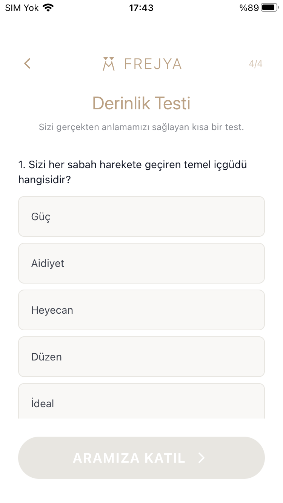
02 Profilini oluştur
Hayvan avatarı · Psikoloji testi · SesFrejya'da profilin bir fotoğraf değil, bir karakterdir. Üç katmandan oluşur:
- Ruhani hayvan avatar: 100'lü hayvan avatarından sana en yakın hissedeni seç. Aura akışında, sohbet listende ve mesajlarda bu avatar görünür.
- Psikolojik derinlik testi: 5 soruluk ~3 dakikalık test, eşleşme algoritmasının seninle uyumlu karakter tiplerini bulması için temel veridir. Her 30 günde bir yenileyebilirsin — insanlar zaman içinde değişir, eşleşmen de seninle birlikte tazelenir.
- Maskelenmiş ses tanıtımı (opsiyonel): 1 dakikalık bir ses kaydı yapabilirsin. Frejya sesini perdeleyerek yayınlar — karşı taraf seni tanıyamaz ama ses tonunu hisseder.
- Kısa biyografi (opsiyonel): İstersen kısa, sembolik bir tanıtım metni eklersin. Eklemezsen profilin sembollerle konuşur.
Profil bilgileri — yaş aralığı tercihi, şehir, meslek, ilgi alanları, beş kelimelik öz tanım — eşleşme algoritmasının kullandığı veridir. Ne kadar dolu doldurursan eşleşme o kadar isabetli olur.
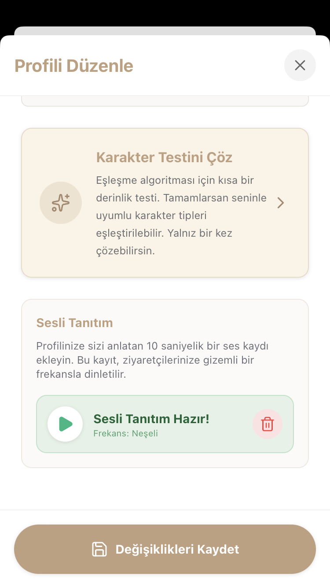
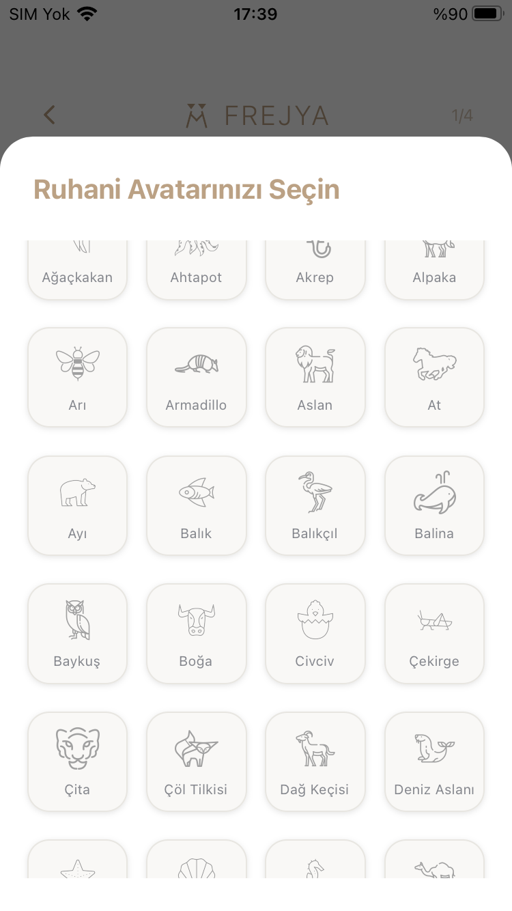
03 Fotoğraf onayı
Yapay zekâ doğrulaması · Sahte profil yokİnsan, bir fotoğraftan büyüktür. Frejya'ya gerçek bir yüz fotoğrafı yüklemen gerekir; ancak bu fotoğraf eşleştiğin kişiye doğrudan gösterilmez — perdenin arkasında kalır ve sohbet ettikçe yavaşça açılır.
- Yüklediğin fotoğraf yapay zekâ tarafından incelenir: tek kişi olmalı, yüz net görünmeli, ünlü/internet fotoğrafı olmamalı, uygunsuz içerik içermemeli.
- İnceleme en fazla 5 dakika sürer; sonuçta "Onaylandı" veya "Yeniden dene" mesajı görürsün. Bu süre boyunca uygulamayı normal şekilde kullanabilirsin.
- Reddedilirse açıklama gösterilir, başka bir fotoğrafla tekrar denersin.
- Onaylanmamış kullanıcı eşleşmelerde görünmez ve mesaj atamaz — bu, herkesin gerçek olduğundan emin olmanın yoludur.
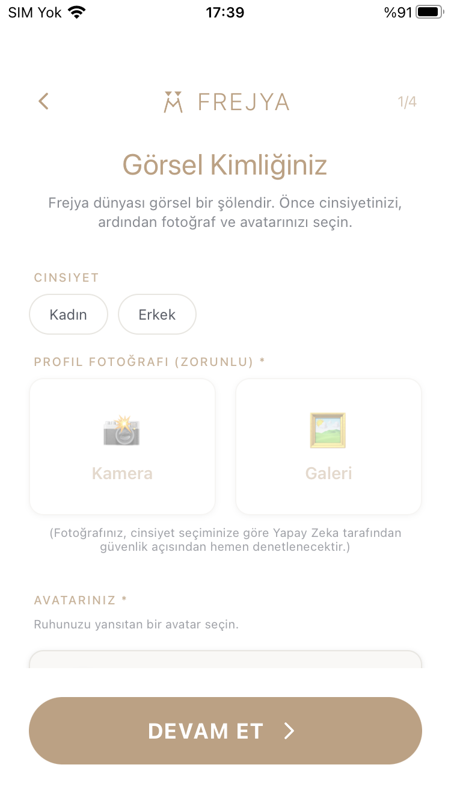
04 Frejya Aura — sosyal akış
Hiyeroglif paylaşımlar · Sözsüz iletişimFrejya Aura, Frejya'nın sosyal akışıdır. Buradaki paylaşımlar metin değil — ikonlardan oluşan sembolik bir dil kullanır.
- 32 ana kategoriden (kahve, müzik, yolculuk, kitap, yemek, doğa…) ikonlar seçersin.
- Her paylaşım en fazla 12 ikondan oluşur ve bir cümle gibi okunur.
- Bir zaman dilimi seç: Her paylaşımına Bugün, Bu hafta veya Gelecek mevsim etiketi koyabilirsin. Böylece bugün yapacağını, bu hafta uzanacağın yeri ya da gelecek mevsime dair hayalini sembollerle anlatırsın. Aura akışı bu etikete göre öncelik verir — yakın olan önce, uzak olan sonra görünür.
- Paylaşımına başkaları kalp bırakır, yorum yazar veya hashtagleri üzerinden seni keşfeder.
- Profilinde en fazla 50 paylaşım tutulur (Premium'da 100). Yeni paylaşım eklediğinde en eski silinir.
- Aura akışındaki gönderiler son 20 paylaşımının hashtag'leri üzerinden eşleşme algoritmasına da girer — yani ne paylaşırsan, kimle eşleşirsen.
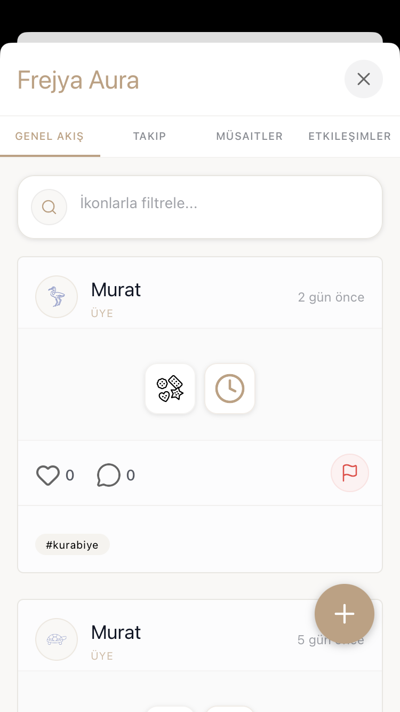
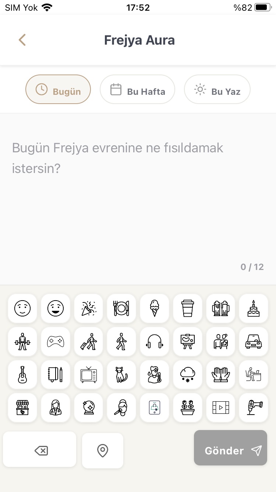
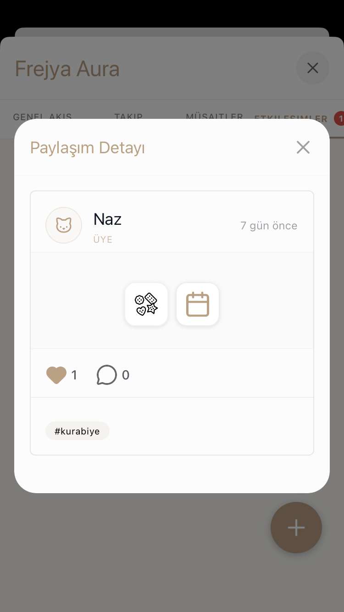
05 Keşfet ve eşleş
Detaylı arama · Karakter uyumuDetaylı Arama ekranında yaş, şehir, ilgi alanları gibi filtreleri ayarlayıp en uyumlu kişileri görürsün. Sonuçlar bir tek aramada gelir; sayfa numaralarıyla aralarında gezersin.
Algoritma şu unsurlara göre uyumu hesaplar:
- Psikolojik karakter tipi uyumu
- Ortak ilgi alanları ve hashtag örtüşmesi
- Yaş, şehir, eğitim, meslek uyumu
- İki taraf için karşılıklı uyum (sen onu beğenirken o da seni beğenmeli)
- Aktiflik (son ne zaman uygulamayı açtı)
Sonuçlarda her aday bir profil kartı olarak görünür. Üzerine basıp profilini incelersin; rakam veya yüzde gösterilmez — Frejya bunun yerine paylaşılan somut özellikleri öne çıkarır.
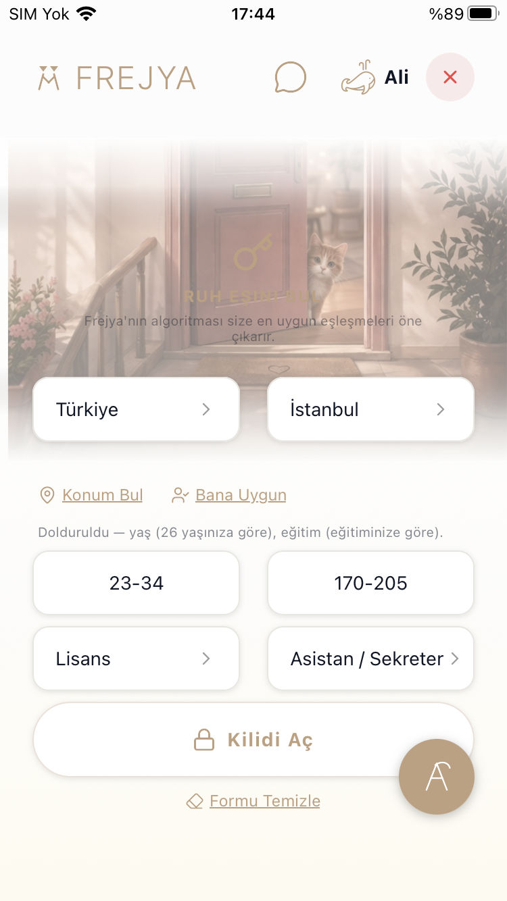
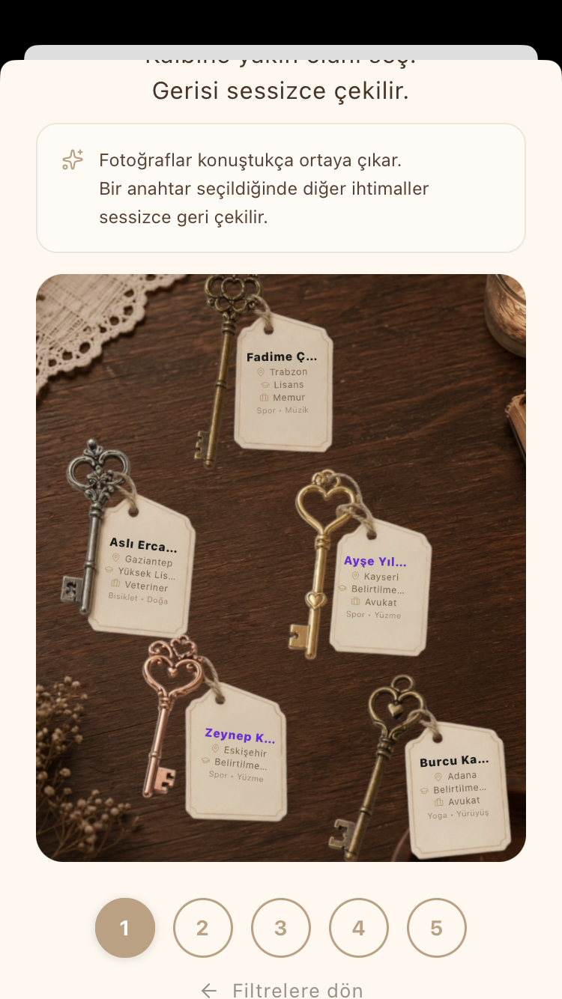
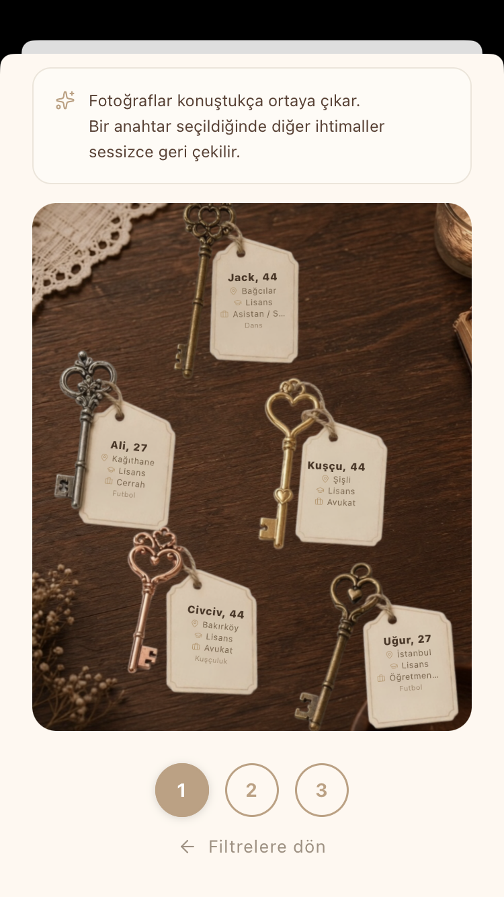
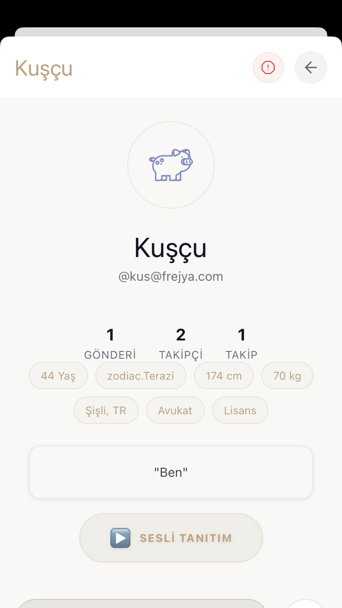
06 Zil çal — kapıyı çal
Davetli sohbet · Karşılıklı rızaBirini beğendiysen profil kartından zilini çalarsın. Karşı tarafa "biri seni çaldı" bildirimi gider — kim olduğunu kabul edene kadar görmez.
- Karşı taraf "Kapıyı Aç" derse sohbet başlar.
- Reddederse veya görmezden gelirse zil sessizce kaybolur — kim olduğun ona bildirilmez.
- Aynı kişiye art arda zil çalamazsın: aynı kişiye günde en fazla 2 zil, ayda en fazla 4 zil. Aralarda 5 dakika beklersin.
- Günlük toplam zil hakkın üyelik katmanına bağlıdır (aşağıda).
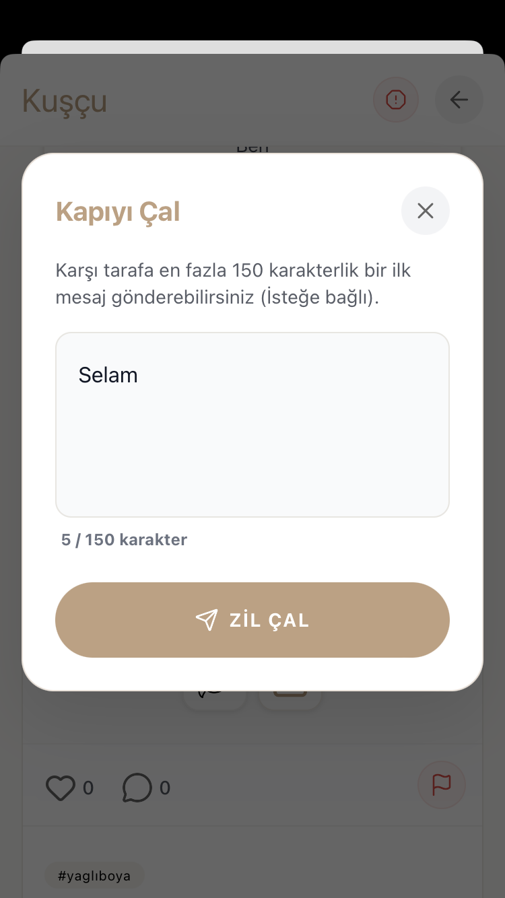
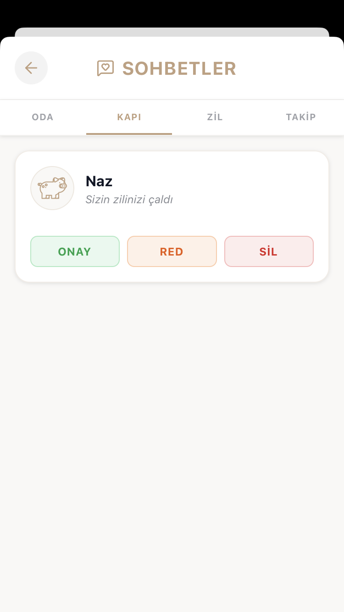
07 Sohbet ve kazıma
Karşılıklı emek · Fotoğraf perdesiKonuştukça tanırsın. Tanıdıkça görürsün. Sohbet açıldığında karşı tarafın fotoğrafı karanlık bir perdenin arkasındadır; mesajlaştıkça perde adım adım kazınır ve fotoğraf yavaş yavaş açılır.
- Karşılıklı sohbet ettikçe perde küçük küçük açılır — emek karşılığı keşif.
- Kazıma karşılıklıdır: ikiniz de karşı tarafın perdesini kendi parmağınızla kazırsınız. Ama perdeyi kazıma hakkı kazanmak için iki tarafın da sohbete katılıp yazması gerekir — biri sessiz kalırsa kimse perdeyi açamaz.
- Mesajlar uçtan uca şifrelenir (E2EE) — Frejya sunucusu, çalışanları veya başka kimse içeriği okuyamaz.
- İstemediğin zaman "Sohbeti Bitir" diyerek sohbeti sonlandırırsın. Sohbet biter, geçmiş silinir; yeni biriyle başlayabilirsin. Bu kişiyle 60 gün boyunca uygulamanın hiçbir yerinde karşılaşmazsınız — sohbetin bittiği anda karşılıklı geçici engel devreye girer, süre dolunca her iki taraf da yeniden görünür hâle gelir.
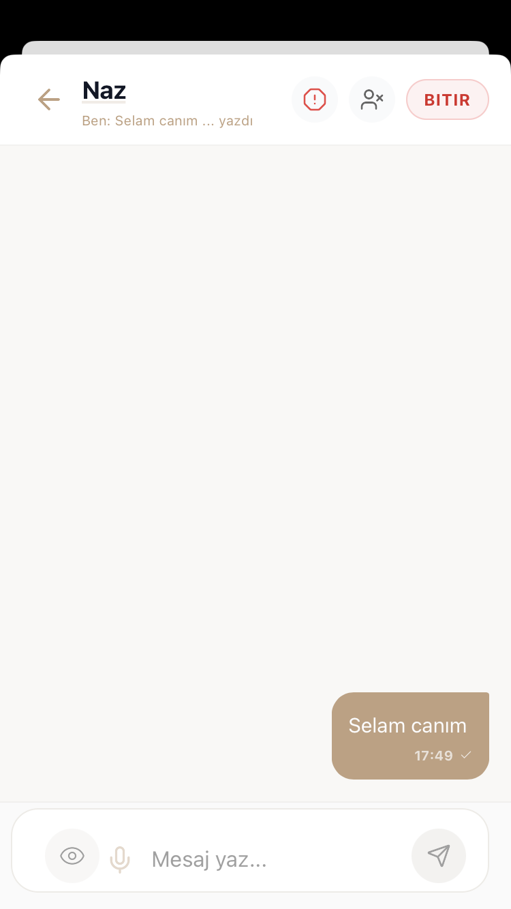
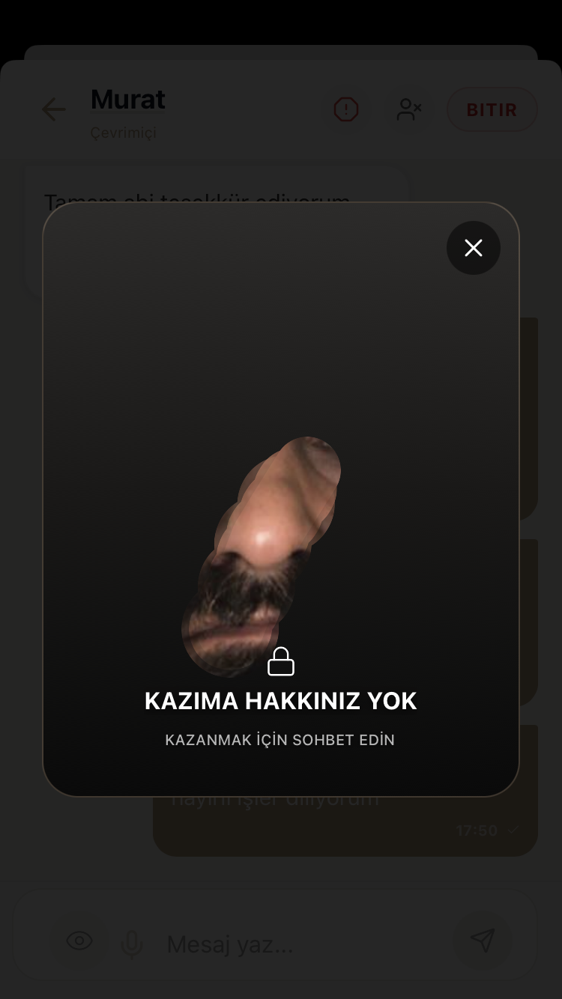
08 Sesli mesaj
Perde açıldıktan sonra · 15 gün ömürSohbette sesli mesaj göndermek için önce fotoğraf perdesinin tamamen açılmış olması gerekir. Bu, sesinin gerçek bir tanışıklığa kavuştuğunda anlam kazanmasını sağlar.
Perde tam açıldığında mikrofon ikonu aktifleşir. Sesli mesajlar da metin mesajları gibi uçtan uca şifrelenir.
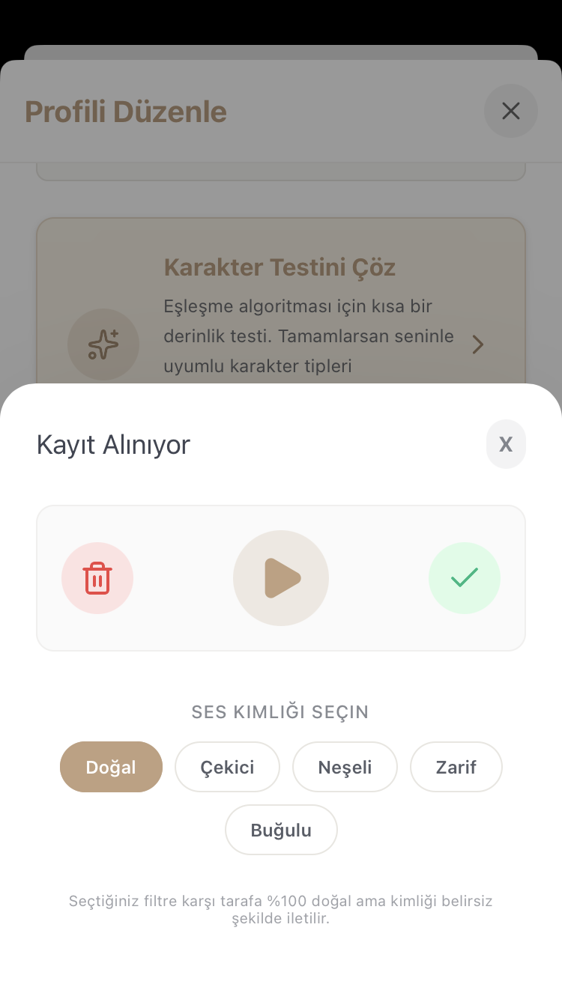
09 Güvenlik ve gizlilik
E2EE · AI moderasyon · Engelle/şikayet- Uçtan uca şifreleme: Mesajların yalnızca seninle karşı tarafın görür. Sunucu okuyamaz.
- AI fotoğraf moderasyonu: Her yüklenen fotoğraf yapay zekâ ile denetlenir — sahte profil, çıplaklık, ünlü fotoğrafı ve uygunsuz içerik filtrelenir.
- Şikayet ve engelleme: Her profil kartında, her sohbet ekranında "Şikayet et" ve "Engelle" butonları vardır. Engellediğin kişiyle bir daha karşılaşmazsın.
- Konum gizliliği: Frejya tam konumunu istemez, yalnız şehrini ve ilçeni sorar. Bu bilgi yalnız eşleşme için kullanılır.
- Ekran görüntüsü bildirimi: Sohbette karşı taraf ekran görüntüsü alırsa bildirim alırsın (Android).
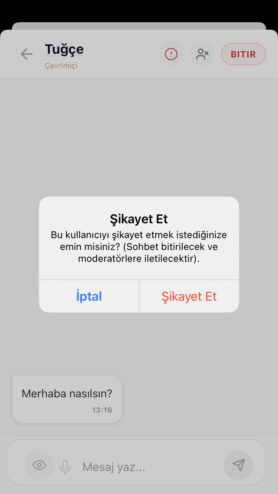
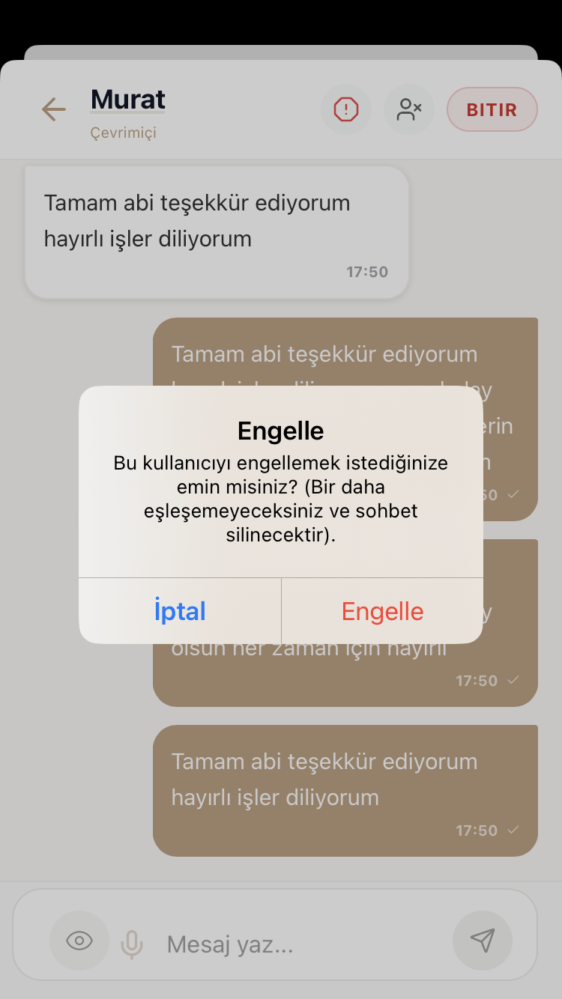
10 Üyelik katmanları
Normal · Onaylı · PremiumFrejya üç üyelik katmanına sahiptir. Tüm temel özellikler her üç katmanda da çalışır — Premium hem günlük etkileşim limitlerini (zil, yeni takip, arama sonucu) hem de toplam yığın limitlerini (post sayısı, takip listesi büyüklüğü) artırır.
| Özellik | Normal | Onaylı* | Premium |
|---|---|---|---|
| Günlük zil hakkı | 5 | 7 | 20 |
| Detaylı arama sonucu | 5 | 10 | 25 |
| Takip listesi limiti | 100 | 100 | 500 |
| Günlük takip ekleme | 10 | 15 | Sınırsız |
| Aura paylaşımı (FIFO) | 50 | 50 | 100 |
*Onaylı: Telefon numarası doğrulanmış kullanıcı (SMS altyapısı yakında aktifleşecek).
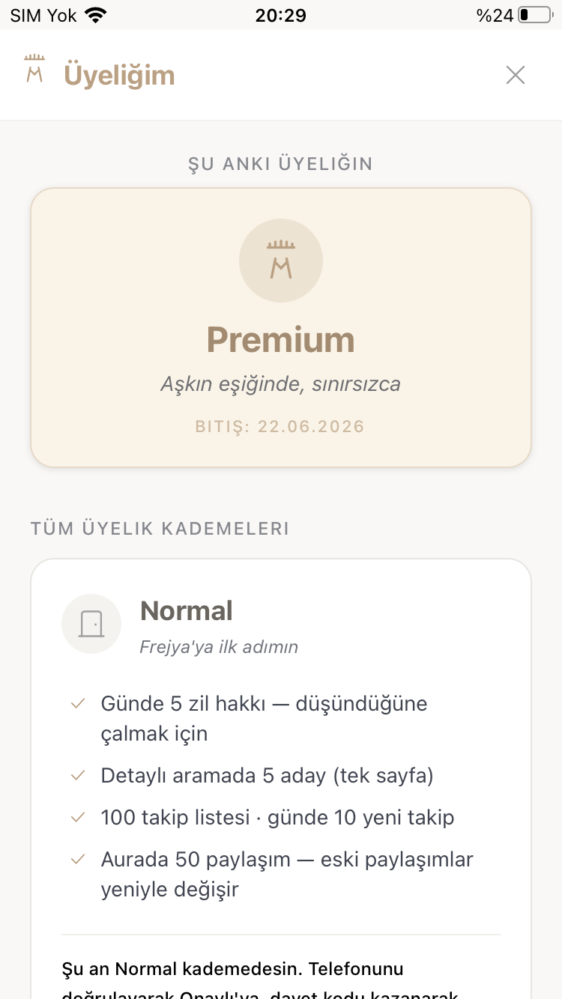
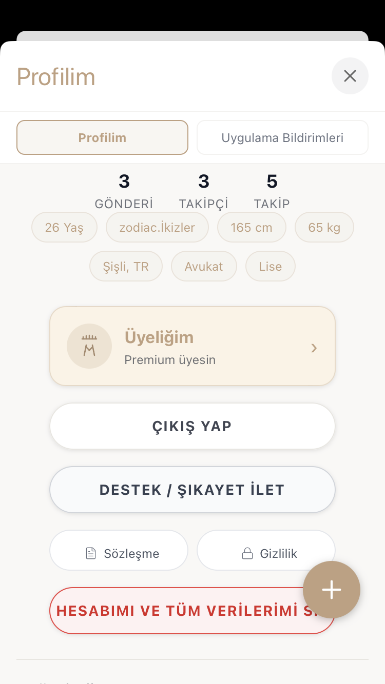
11 Arkadaşını davet et
Her davet 1 ay Premium hediyeProfil ekranında kişisel davet kodun görünür. Bu kodu bir arkadaşına gönderirsin:
- Arkadaşın kayıt olurken kodunu girer.
- Arkadaşının profil fotoğrafı onaylanınca sana otomatik olarak +1 ay Premium eklenir.
- Premium sürelerin birikir — 5 arkadaş davet edersen 5 ay Premium kullanırsın.
- Çift hesap istismarını engellemek için aynı cihazdan davet edilen hesaplar ödüllendirilmez.
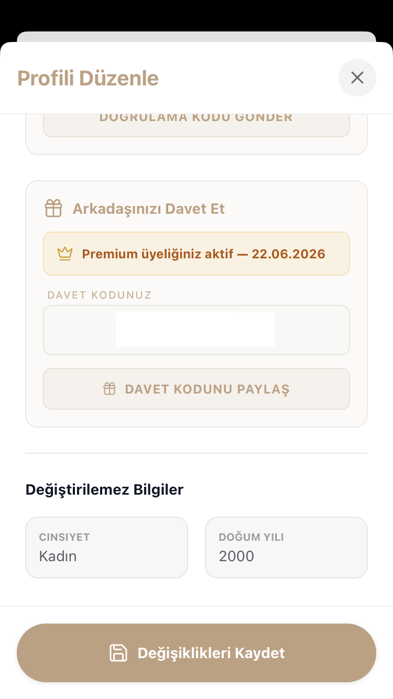
12 Hesabını silme
Hemen silinir · Geri alınamazProfil ekranındaki "Hesabımı Sil" butonuyla hesabını istediğin an silebilirsin. Silme kalıcıdır — onay verdikten sonra geri alınmaz.
- Profilin, fotoğraflarının, mesajlarının, paylaşımlarının ve takipçi listenin tamamı hemen silinir.
- Sonradan fikir değiştirip aynı hesabı geri alamazsın; veriler geri dönüşsüz biçimde kaldırılır.
- Yasal yükümlülükler için (örneğin bir dolandırıcılık şikâyetinin incelenmesi) hesap kaydı 15 gün boyunca anonim tutulur, sonra tamamen silinir. Bu süre boyunca aynı e-posta ile yeniden kayıt olamazsın.
- Frejya'ya tekrar gelmek istersen 15 gün dolduktan sonra başka veya aynı e-posta ile yeni bir hesap açabilirsin — ama eski profilin ve geçmiş sohbetlerin geri gelmez.
Verilerinin kullanımı hakkında detayları Gizlilik Politikasında bulabilirsin.
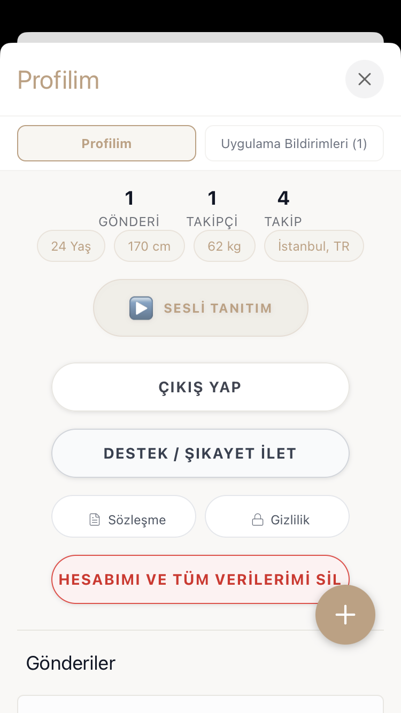